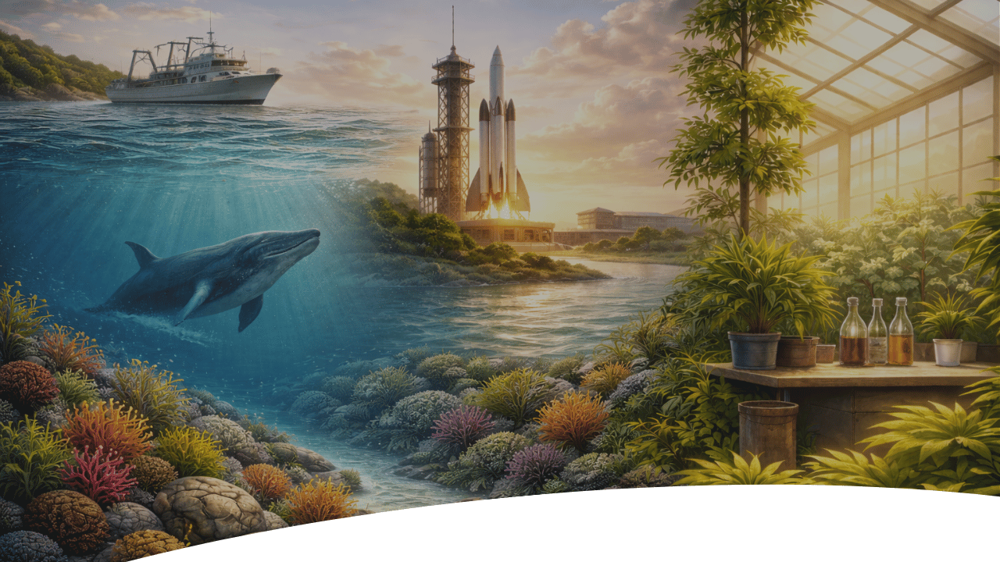
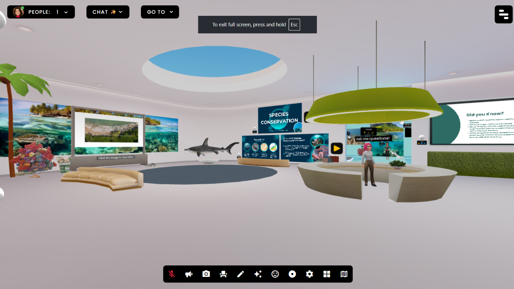
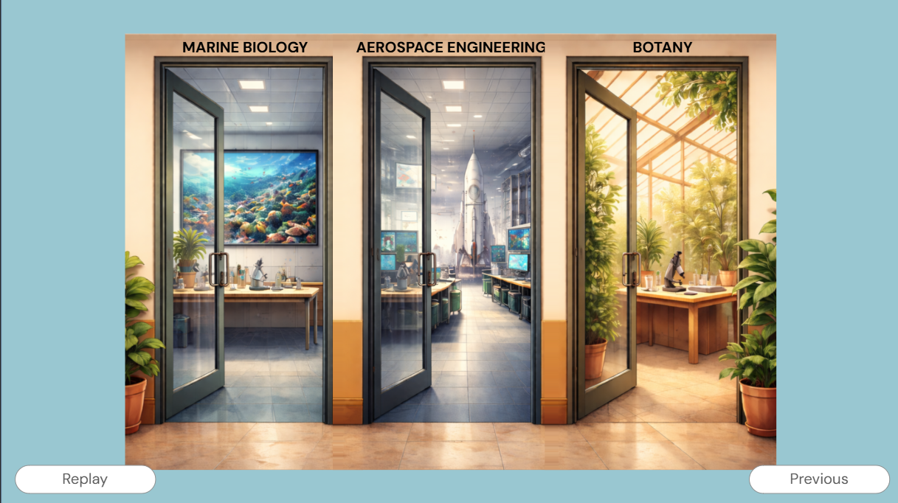
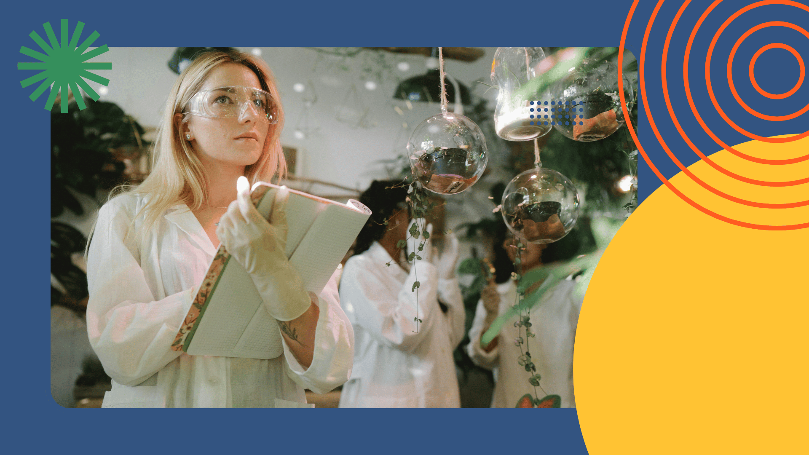
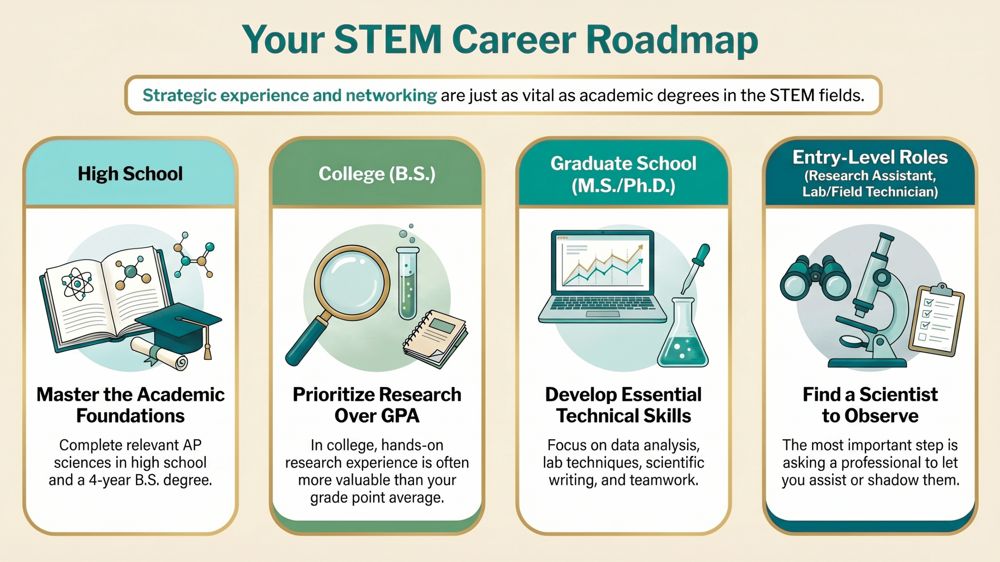
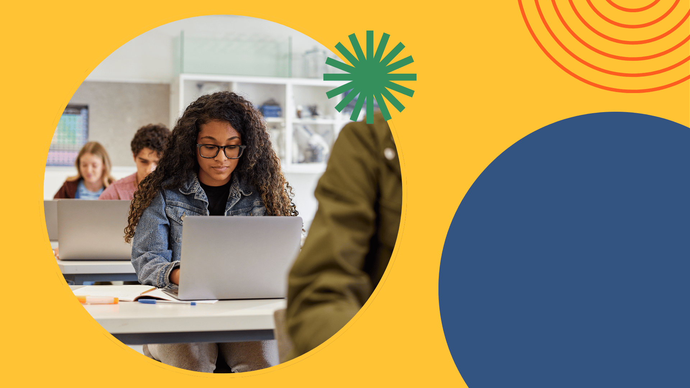

Stem Careers Museum
COMPANION GUIDE

caught your attention, you are
in the right place.
Let's Review Your Experience!
You Toured the STEM Careers Museum in FrameVR
Your journey happened in two parts. First you explored the STEM Career Museum, a virtual environment where you walked through exhibits, met real women building careers in science, and got an honest look at what their work actually involves day to day. Reflect on which field interested you most and why.


You Made Decisions in Your STEM Journey Simulation
Here, you stepped into the story yourself in Your STEM Journey where you chose a career field, navigated the four-week Future STEM Leaders Summer Program, dealt with a setback, and figured out what you would do next.
Explore the Three Career Fields
During your experience you got an inside look at three career fields that are shaping the future of our planet and beyond. Here is a quick reminder of what each one is all about.
- Marine Biology: The science of the ocean and everything living in it, from microscopic plankton to massive whales, and the researchers working to protect it all.
- Aerospace Engineering: The field behind every rocket, satellite, and aircraft ever built, and the engineers figuring out how to take humanity even further.
- Botany: The study of plants and the scientists uncovering how they feed us, heal us, and keep our planet breathing.

These three fields might seem completely different from each other, but they actually have a lot in common. Marine biologists, aerospace engineers, and botanists all use data, work in teams, write about their findings, and communicate their discoveries to the world. The skills you build in one of these fields can open doors in all of them. And the best part? You do not have to have everything figured out right now. Exploring is the first step, and you have already taken it.
Why These Three Fields Were Chosen
These fields address major global challenges. Marine biologists are working to save coral reefs that support a quarter of all ocean life. Aerospace engineers are launching satellites that monitor climate change from space. Botanists are developing the crops that will feed the world as temperatures rise. These are not small problems. And the scientists solving them started exactly where you are right now.
STEM Career Roadmap

About The Career Roadmap Diagram
This diagram shows the career pathway for a STEM scientist in four stages moving from left to right. The first stage is high school and college, where you are encouraged to take AP science courses such as Biology, Chemistry, Environmental Science, and Physics. The second stage explains the importance of prioritizing research experience over GPA while earning a Bachelor of Science degree. The third stage is graduate school, where you can pursue a funded Master of Science or Ph.D. program and are encouraged to develop essential technical skills. The fourth stage stresses the importance of finding a professional to let you assist or shadow them. You can begin in entry-level roles such as Research Assistant, Lab Technician, or Field Technician.
Discover What the Path Actually Looks Like
- Step 1: Take the right courses in high school Start with AP science courses that match your interests. AP Biology, AP Chemistry, AP Environmental Science, AP Physics, and Statistics are all great options. Computer Science electives are increasingly valuable in every science field too. You do not need to take all of them. Choose the ones that connect to the field you are most curious about.
- Step 2: Earn a Bachelor of Science degree In college you will pursue a four year Bachelor of Science degree in your chosen field, such as Marine Biology, Aerospace Engineering, or Botany. This is where you build your foundational scientific knowledge and start gaining real research experience. Research experience matters just as much as your GPA, so look for lab positions, field work opportunities, and undergraduate research programs.
- Step 3: Gain research experience along the way You do not have to wait until college to start building experience. Internships, volunteer positions, science camps, and shadowing opportunities are all available to high school students. Every bit of real world experience you accumulate makes the next step easier to reach.
- Step 4: Consider graduate school Many science careers require or strongly prefer a Master of Science or Ph.D. degree. The good news is that most graduate programs in science are funded, meaning the university pays you a stipend to do research and covers your tuition at the same time. Graduate school in science is not the financial burden it might seem from the outside.
- Step 5: Start in an entry level role Every science career has a first day. Entry level roles like Research Assistant, Lab Technician, and Field Technician are where most scientists begin. These positions give you hands on experience, professional connections, and a real understanding of how science works outside the classroom.
- Step 6: Find a mentor This step can actually happen at any point in the journey, not just at the end. Find a scientist doing work that genuinely interests you and reach out to ask if you can observe or learn from them. Most scientists remember what it felt like to be exactly where you are, and most will say yes. One conversation can open doors you did not even know existed.

Science in Action
Here is something worth considering. Scientists estimate that more than 50% of the ocean floor has never been explored1. The field of Marine Biology still contains more questions than answers. In Botany, photosynthesis is the process that converts sunlight, carbon dioxide (CO2), and water (H2O) into energy. This process supports nearly every living thing on Earth, and researchers are still discovering how it works at the molecular level. These are not finished fields. They remain full of unanswered questions and opportunities for discovery. You could be one of the people who helps answer them.
Explore How Scientists Use Five Core Building Blocks
Every STEM scientist uses these five building blocks in their work. The table below shows what each one looks like across the three career fields you explored.
| Marine Biology | Aerospace Engineering | Botany | |
|---|---|---|---|
| Field Work or Testing | Diving in the ocean, collecting water and soil samples, and observing marine life in its natural habitat | Testing aircraft and spacecraft systems, running wind tunnel experiments, and conducting launch simulations | Collecting plant specimens in the field, running greenhouse experiments, and testing how plants respond to different conditions |
| Data Analysis | Studying population trends in marine species, measuring water temperature and acidity levels, and tracking ecosystem changes over time | Analyzing flight data, modeling spacecraft trajectories, and using computer simulations to test engineering designs | Measuring plant growth rates, analyzing the chemical composition of plant specimens, and studying how environmental changes affect plant health |
| Scientific Writing | Writing research papers on ocean ecosystems, publishing findings about marine species, and creating reports for conservation organizations | Producing technical documentation for engineering designs, writing mission reports, and publishing research on aerospace systems | Writing botanical research papers, documenting new plant species, and publishing studies on plant ecosystems and climate adaptation |
| Team Collaboration | Working alongside other marine scientists on research vessels, collaborating with conservationists, and partnering with government agencies to protect ocean ecosystems | Working within large multidisciplinary engineering teams, coordinating with scientists from multiple fields, and collaborating with international space agencies | Partnering with ecologists and environmental scientists, working with agricultural researchers, and collaborating with conservation organizations |
| Science Communication | Educating the public about ocean conservation, presenting research findings at scientific conferences, and working with media to raise awareness about marine ecosystems | Communicating mission objectives to the public, presenting technical findings to government agencies, and participating in STEM education outreach programs | Explaining the importance of plant science to the public, presenting botanical research at conferences, and advocating for plant conservation and environmental policy |
Build Your STEM Profile
Learn more from NOAA opens in a new tab, NASA opens in a new tab, and Botanical Society of America opens in a new tab.